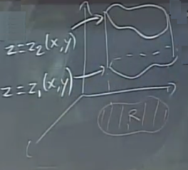

Ders 29
[onceki ders tekrarı atlandı]
Uzaklaşım teorisinin ispatına gelelim. Bu ispatın daha kolay versiyonunu yapacağım şimdi, tüm eşitlik yerine
$$ \int \oint_S < 0,0,R > \cdot \hat{n} \mathrm{d} S = \iiint_D R_z \mathrm{d} V \qquad (1) $$
eşitliğinin ispatını yapacağım. Buradan hareketle daha genel eşitliği ispatlamak kolay, aynı ispatı sadece $x$, sadece $y$ bileşeni olan vektör alanları için tekrarlarım, ve tüm bunları toplayınca ana eşitliği elde etmiş olurum.
İkinci bir basitleştirme yapalım, çünkü ispatı hala herhangi bir yüzey için yapabileceğimden emin değilim. Dikey, basit bir yüzey kullanacağım, öyle ki bu yüzey üzerinden entegralde $z$ değişkenin sınırlarını kolay halledebileyim.

Bir üst yüzey var bir alt var, aralarında kalan yüzey dikey. Burada kullandığım kavram, dikey basit bölge (vertically simple region) iki yüzey arasındaki bölge.
Başlayalım, üstteki formülün sağ ta rafındaki entegrali hesaplayalım. Bu hesaptan bir sayı çıkmayacak tabii ki çünkü pek çok şeyi tanımsız bıraktık, ama en azından bazı basitleştirmeler yapabiliriz, mesela bir ölçüde $z$ üzerinden entegral alabilirim.
$$ \iiint_D R_z \mathrm{d} V = \iint \int_?^? R_z \mathrm{d} z \mathrm{d} x \mathrm{d} y $$
$z$'nin sınırları nedir? Hatırlarsak üçlü entegralde $z$ üzerinden entegral alırken ise $x,y$ değişkenlerini sabitleyerek başlıyorduk, ve o sabitlenen $x,y$'den yukarı çıkıp bir dikey kesite bakıyorduk ve sınırların nereye geldiğini not ediyorduk. Üstteki bölge için bu altta $z_1$, üstte $z_2$.
$$ = \iint \int_{z_1}^{z_2} R_z \mathrm{d} z \mathrm{d} x \mathrm{d} y $$
Şimdi tüm mümkün $x,y$ için entegralin geri kalanını hesaplamak istiyorum, bu üstteki dikey bölgenin gölgesindeki alan $U$ içinde olacak,
$$
= \iint_U \left( \int_{z_1(x,y)}^{z_2(x,y)} R_z \mathrm{d} z \right) \mathrm{d} x \mathrm{d} y
$$
Üstteki entegrali hesaplamayı düşünürsek, en içteki entegral fazla kötü durmuyor aslında, $R$'nin $z$'ye göre türevi var, sonra $z$ üzerinden entegral alınıyor. Bu bize $R$'yi geri vermez mi? Evet. O zaman
$$ \iiint_D R_z \mathrm{d} V = \iint_U \bigg[ R(x,y,z_2(x,y)) - R(x,y,z_1(x,y)) \bigg] \mathrm{d} x \mathrm{d} y \qquad (2) $$
Elde net formül olmadan daha fazla ilerleyemem, şimdi çift entegrale dönüyorum. Bu entegralde $S$ var, ve $S$ alt, üst ve yan yüzeylerden oluşan kapalı bölge.
$$ \int \oint_{S = \textrm{alt+üst+kenarlar}} < 0,0,R > \cdot \hat{n} \mathrm{d} S = \iint_{\textrm{üst}} + \iint_{\textrm{alt}} + \iint_{\textrm{kenarlar}} $$
Üst yüzey ile başlayalım. Akış entegralindeki $\hat{n} \mathrm{d} S$'i o yüzey için hazırlamak lazım. İyi haber üst, alt yüzeyin $x,y$ üzerinden bir $z$ formülü var, ve bu tür formül olunca $\hat{n} \mathrm{d} S$'i nasıl hesaplayacağımızı biliyoruz, mesela $z=z_2(x,y)$ için,
$$ \hat{n} \mathrm{d} S = < -\frac{\partial z_2}{\partial x}, -\frac{\partial z_2}{\partial y}, 1 > \mathrm{d} x \mathrm{d} y $$
Tabii üstteki $z_2$ üzerinden kısmi türevleri de hesaplayamıyoruz ama iki üstteki formülde $< 0,0,R >$ ile bir noktasal çarpım var, $z_2$ türevi içeren ilk iki terim yokolacak, geriye 1 ile çarpılan $R$ kalacak,
$$ < 0,0,R > \cdot \hat{n} \mathrm{d} S = R \mathrm{d} x \mathrm{d} y $$
Bu demektir ki
$$ \iint_{\textrm{üst}} < 0,0,R > \cdot \hat{n} \mathrm{d} S = \iint_{\textrm{üst}} R \mathrm{d} x \mathrm{d} y $$
olur. $z$ için üst kısımdeki $z_2$ formülünü kullanırız,
$$ = \int \int_U R(x,y,z_2(x,y)) \mathrm{d} x \mathrm{d} y $$
ve $z,y$ değişken sınırları için, bölgem tam $U$ üzerinde duruyor o zaman sınırları $U$ belirler.
Alt kısım için aynı yöntem, $z = z_1(x,y)$ formülünü kullanıyoruz, ilk başta alttakini yazabilirdik,
$$ \hat{n} \mathrm{d} S = < -\frac{\partial z_1}{\partial x}, -\frac{\partial z_1}{\partial y}, 1 > \mathrm{d} x \mathrm{d} y $$
Yanlız bir noktaya dikkat, işaret yönü (orientatıon) önemli. Uzaklaşım Teorisi'ni tanımlarken normal vektörlerin tanımladığımız bölgelerden dışarı doğru işaret etmesi gerektiğini söylemiştik. Bu durumda alt bölgede $\hat{n}$ aşağı doğru işaret eder. Bu sebeple üstteki vektörü ters donduruyoruz,
$$ \hat{n} \mathrm{d} S = <\frac{\partial z_1}{\partial x}, \frac{\partial z_1}{\partial y}, -1 > \mathrm{d} x \mathrm{d} y $$
Devam ediyoruz, önceki noktasal çarpımı tekrarlayalım,
$$ < 0,0,R > \cdot \hat{n} \mathrm{d} S = -R \mathrm{d} x \mathrm{d} y $$
Entegre ediyoruz,
$$ \int \int_U -R (x,y,z_1(x,y)) \mathrm{d} x \mathrm{d} y $$
Şimdi sıra bölge kenarlarına geldi. Fakat kenarların $z$ eksenine paralel, yukarı doğru dimdik olduğunu söylemiştik, o zaman bu kenarlardan akış olamaz, demek ki kenar bölgeler için hesaba gerek yok. Zaten baştaki problem tanımı (1)'de bu sebeple tanımı basit tutmuştum, vektör alanını $< 0,0,R > $, sadece $z$ bileşenini içerek şekilde tanımlamıştım ki şimdi bu ek hesaptan kurtulabileyim.
Sonuc
(2)'de $\iiint_D R_z \mathrm{d} V$ için bir formül elde etmiştik. Eğer akışı üst ve alt bölgeler için toplarsam aynı sonuca eriseceğim.
$$ \iiint_D R_z \mathrm{d} V = \int \oint_{\textrm{üst+alt+kenarlar}} < 0,0,R > \cdot \hat{n} \mathrm{d} S $$
İspatın bu kısmını tamamlamış olduk.
[atlandı]